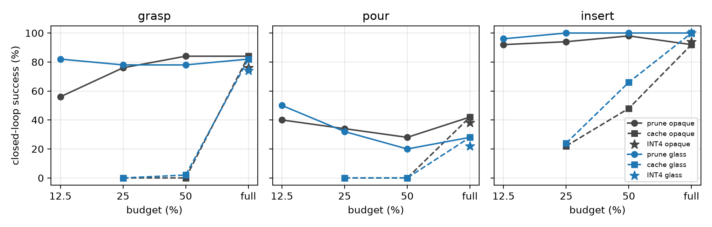
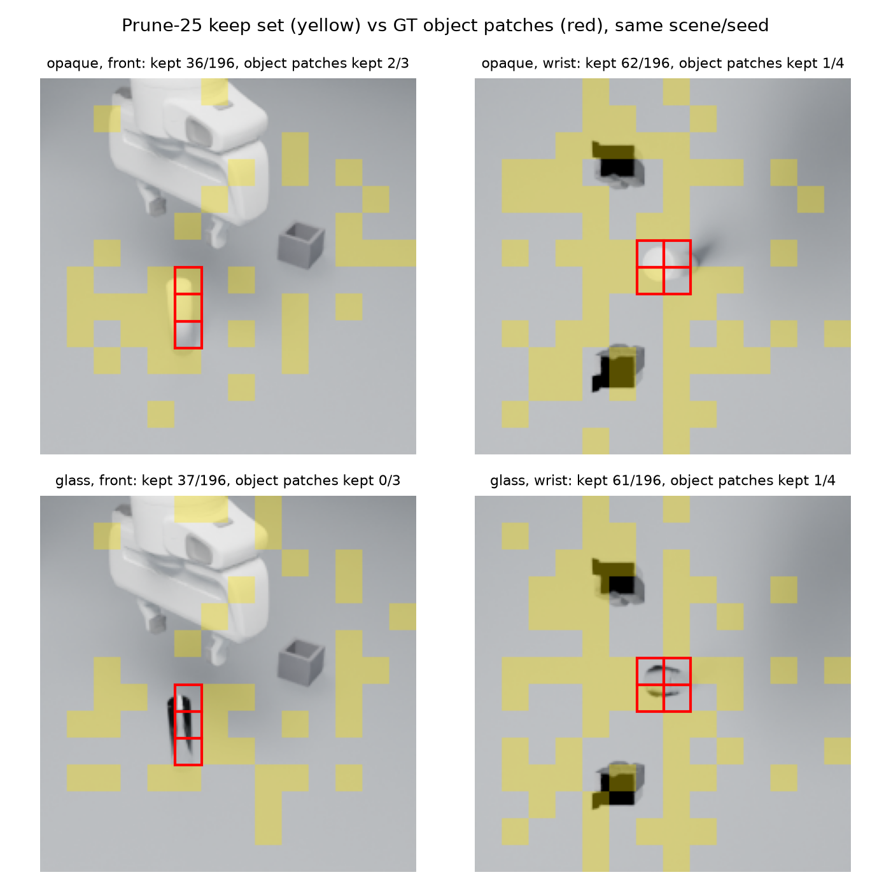
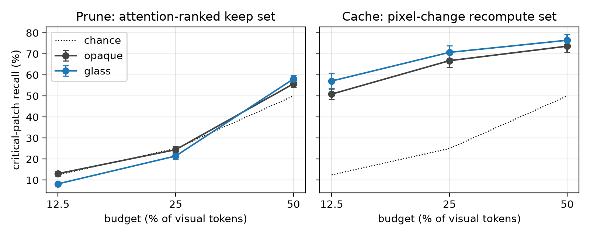
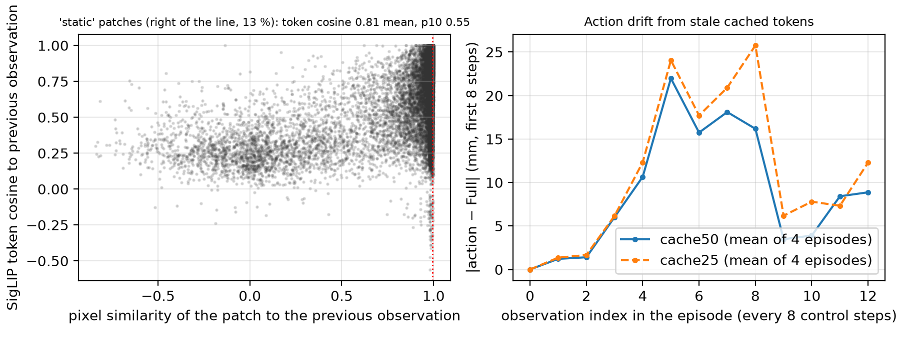

A pre-registered study of VLA acceleration on transparent lab objects
TL;DR. VLA speed-ups (token pruning, token caching, 4-bit weights) are benchmarked on opaque blocks and mugs; labs are made of glass, whose thin, low-texture, slowly changing appearance is exactly what these methods discard. I pre-registered the hypothesis that they cost more task success on glass, built a paired opaque/glass lab simulator and a fully instrumented 30M-parameter VLA to test it, and the hypothesis is false: at every usable budget, glass and opaque objects lose the same. What came out true is material-independent. Pruning keeps the object's patches at chance and it doesn't matter, because the object's information has left the visual tokens by layer 2. Pixel-change caching is catastrophic (0% success), because patches whose pixels don't move still have ViT tokens that do. And none of it is faster on an L4 or an M5 Pro.
Every scene is built from a seed in MuJoCo and rendered in Blender Cycles with real refraction; the same seed gives the same geometry, expert actions and masks with either an opaque or a glass test tube, so every comparison is paired. Three lab tasks (grasp and rack, pour to a line, insert into a holder), 2,700 scripted demonstrations, and a from-scratch VLA (frozen SigLIP → 6-layer prefix → flow-matching action expert) whose every attention map and key/value cache is mine to read. Four accelerations run on identical weights: FastV-style pruning, VLA-Cache-style pixel-change K/V reuse, fake INT4, and an oracle that protects the object's patches. Five hypotheses, metrics and decision rules were fixed before any model was trained.
On 50 paired seeds per cell (3,400 closed-loop episodes with the final instrument), no method loses more on glass than on opaque at the 25% budget; every confidence interval on the material difference includes zero, and the design rules out glass-specific losses of about 20 points or more. INT4 is material-neutral within 2 points. The one significant material effect, at a brutal 12.5% budget, runs the other way: pruning costs the opaque tube 28 points of grasp success and the glass tube nothing.

I measured how often the pruned keep-set contains the patches that actually hold the tube. At a 25% budget: 24.5%. Chance. Only 1–5% of the attention that ranks the tokens ever lands on the object, and the glass tube gets about half of what the opaque one gets. Yet success barely moves, and an oracle that keeps every object patch changes nothing. By layer 2 the object's information has moved into the text and proprio tokens; pruning works not because it finds the object but because the object no longer needs finding. Recall of the object's patches, which is where much of the pruning literature argues, predicts nothing about closed-loop success here.


Pixel-change caching reuses last observation's key/value pairs for patches whose pixels didn't change. It scored 0% on grasp and pour at every budget, on both materials, and so did a feature-change variant. The reason: a ViT token depends on the whole image, not its own pixels. Among patches whose pixels are static between observations, the SigLIP token's cosine to its previous value is 0.81 on average and below 0.55 for a tenth of them. Reuse feeds the policy stale features on every frame where anything moved, which in manipulation is every frame; the error compounds along the approach and the arm knocks the tube over. VLA-Cache's authors report a ten-point loss from naive reuse; for a policy that depends on a 10-pixel object, it is a total loss.

| Budget | Tokens after layer 2 | GFLOPs | L4 eager | L4 CUDA graphs | L4 TensorRT | M5 Pro total |
|---|---|---|---|---|---|---|
| Full | 457 | 24.4 | 64.8 ms | 5.44 ms | 5.51 ms | 51.4 ms |
| Prune-50 | 261 | 19.0 | 65.3 | 5.17 | 5.72 | 54.2 |
| Prune-25 | 163 | 16.5 | 64.1 | 4.88 | 5.82 | 54.6 |
| Prune-12.5 | 114 | 15.3 | 64.1 | 4.67 | 6.05 | 55.0 |
Eager PyTorch on the L4 is launch-bound: 65 ms per observation whether you keep 457 tokens or 114. Compiling with CUDA graphs is a 12× win on its own; after that, a 37% FLOPs cut buys 14% of latency, and under TensorRT nothing. On the Mac the frozen vision encoder and the ten-step action expert are 90% of the time and the methods touch the other 10%. At this size and batch 1, token-level tricks are not where the milliseconds are.
| Pre-registered hypothesis | Bar | Result |
|---|---|---|
| H1 importance scores under-rank glass | gap ≥ 10 pts | not supported (+3.0 [+1.8, +4.2]) |
| H2 speed-ups cost more on glass | ≥ 15 pts on ≥ 2 tasks | not supported (all CIs include 0) |
| H3 each method fails where its assumption fails | direction | right direction for pruning, tiny effect; caching floors everything |
| H4 quantization is material-neutral | < 5 pts | supported (≤ 2 pts) |
| H5 protecting object patches recovers the loss | ≥ 50% recovered | not applicable: nothing to recover |
A fine-tuned 450M SmolVLA on the same data did worse than the from-scratch model on every task and is in the appendix as a negative result.
Simulated glass is cleaner than real glass. The liquid is scripted and the pour instrument is below its validity bar. n = 50 per cell. One model, one seed; the 12.5% reversal is unreplicated. The achievable FLOPs saving is bounded at 37% by design. Every episode log is in the repo and the analysis reproduces in minutes without a simulator.
@misc{mehrotra2026clearvla,
title = {Static Pixels Are Not Static Tokens: A Pre-Registered Study of
VLA Acceleration on Transparent Lab Objects},
author = {Mehrotra, Yogya},
year = {2026},
url = {https://github.com/yogyam/clearvla}
}